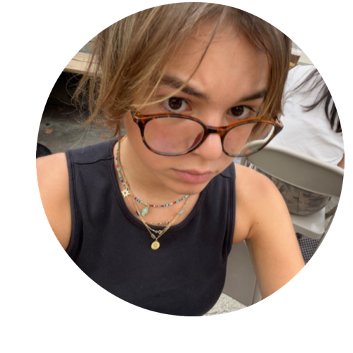

Shoot ur Shot
Dün akşam pencere açık uyuduğum için büyük ihtimalle gece üşüdüm. Arka arkaya milyon tane rüya görmüş olmama başka sebep bulamadım. 12 gibi chill bi Pazar gününe uyandım, giyindim, örgülerimi açtım, yarınki CS 61A midterm'ine hazırlanmak için Strada'ya gittim. Irmoshumla buluştuk. Strada'da resmen sandalye kapmaca oynanıyo. Ben de bu sabah tesadüfen iki boş masa buldum. E tabi insanlar iki boş masaya sadece bi kişinin oturduğunu görünce aç köpek gibi kapmaya çalışıyodu. Irmak daha geç gelseydi tek masayı değil iki masayı da kaybedicektim.
İngilizce ödevimi yaparken task'lerden biri 5 dakikalık podcast dinlemekti. Müziğimi durdurup bunu dinlemek zorunda olduğum için baya ön yargılıydım. Bu 5 dakikanın beni bu kadar etkileyecegini dusunmemiştim. "Bird by bird" diye bir phrase kattı bana.
Üzerinde çalıştığın bir şey, ders, müzik, okuma, yazma, kod, spor, ne olursa olsun, zorlandığında, exhusted olduğunda take a step back, breathe, ve bunu hatırla. "bird by bird". Yani take it step by step. Her şeyi aynanada yapmana gerek yok. Araba kullanırken, bir yolun sonunu görmeden, sadece farlarınla 2 metre ötesini görürken bile gitmeye devam ediyosun. Yolun sonunu bilmemekten korkma, adım adım sakin sakin ilerle. Ses kaydında bir anı anlatıyordu. Anlatan kişinin kardeşi kuşlarla ilgili bir araştırma yapıyormuş ve aksam masasında otururken çok stresliymis. Babası da gelip ona "bird by bird" demiş.

3 saatlik çalışma session'ımızın yarısında karşı çapraz masamıza iki çocuk oturdu. Arada bir tanesiyle göz göze geliyorduk. En sonunda kalktıklarında çocuk bana approach etti ve "i think ur really cute, can i get ur number" dedi. i would never. ben de verdim numarami oops.
Highlight
"bird by bird"
burda herkes shooting their shot?
